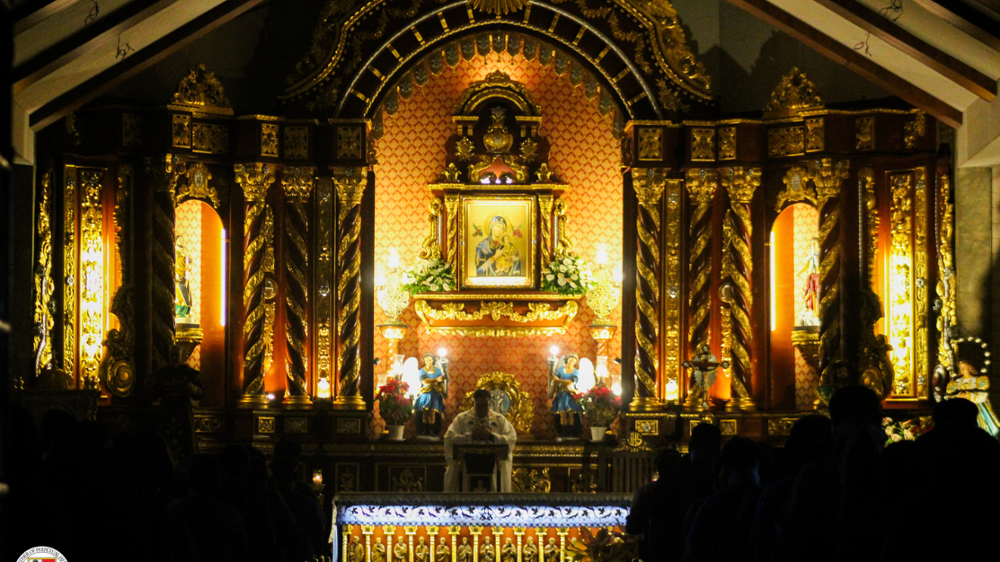

Mary, Mother of Perpetual Help Parish boasts a compelling history that unfolds over the course of several decades. Its origins can be traced back to the mid-20th century when a group of devoted individuals came together with a shared vision of establishing a Catholic parish dedicated to the Blessed Virgin Mary under the title of Perpetual Help. The founding members, driven by a deep sense of faith and community, laid the foundation for what would evolve into a vibrant and spiritually enriching center. The choice of Mary as the patron reflects the parish's commitment to seeking perpetual help and solace through the intercession of the Mother of God. From the earliest days, the parish became a sacred space for worship, reflection, and the communal celebration of the Catholic faith.
The formative years of Mary, Mother of Perpetual Help Parish were characterized by the dedication and resilience of its pioneers. A modest church structure emerged as the heart of the community, providing a physical space for religious ceremonies, communal gatherings, and educational initiatives. Over time, the parish expanded its reach beyond the confines of the church walls, embodying the principles of outreach and service integral to Catholic teachings. Through various programs and initiatives, the parish became a beacon of hope and support for those in need, embodying the Christian values of compassion, charity, and love. The community flourished not only in numbers but also in its commitment to making a positive impact on the broader society, establishing itself as a dynamic force for social good.
As the years unfolded, Mary, Mother of Perpetual Help Parish underwent a continual process of growth and adaptation. The parish community faced challenges and triumphs, witnessing moments of celebration and expansion as well as periods that tested its resilience. Throughout these experiences, the unity of faith and the bonds of community remained steadfast. Today, the parish stands as a testament to the enduring power of collective spirituality and service. It continues to play a vital role in the lives of its members, contributing to the spiritual, social, and educational fabric of the broader community. Mary, Mother of Perpetual Help Parish remains a living embodiment of the Catholic faith, embodying the teachings of love, compassion, and perpetual assistance that define its rich and enduring history.
A Vision for Tomorrow
In the latter part of the 20th century, Mary, Mother of Perpetual Help Parish solidified its presence as a spiritual anchor for the community. The parish became a hub for religious education, fostering the growth of its members in faith and knowledge. Initiatives such as youth groups, adult education programs, and community outreach projects further strengthened the parish's connection with its members and the wider society. Through these endeavors, Mary, Mother of Perpetual Help Parish not only provided a space for worship but also became a catalyst for personal and communal transformation, nurturing a generation committed to the principles of love, justice, and perpetual assistance.
As Mary, Mother of Perpetual Help Parish looks to the future, it continues to embrace its legacy while envisioning new horizons. The parish remains committed to evolving with the changing needs of its diverse congregation, integrating technology, and innovative approaches to deepen spiritual engagement. The vision for tomorrow includes a continued dedication to social justice, environmental stewardship, and the holistic well-being of its members. As Mary, Mother of Perpetual Help Parish steps into the next chapter of its history, the community remains united in its mission to embody the teachings of faith and perpetual help, ensuring a lasting impact on the lives it touches.